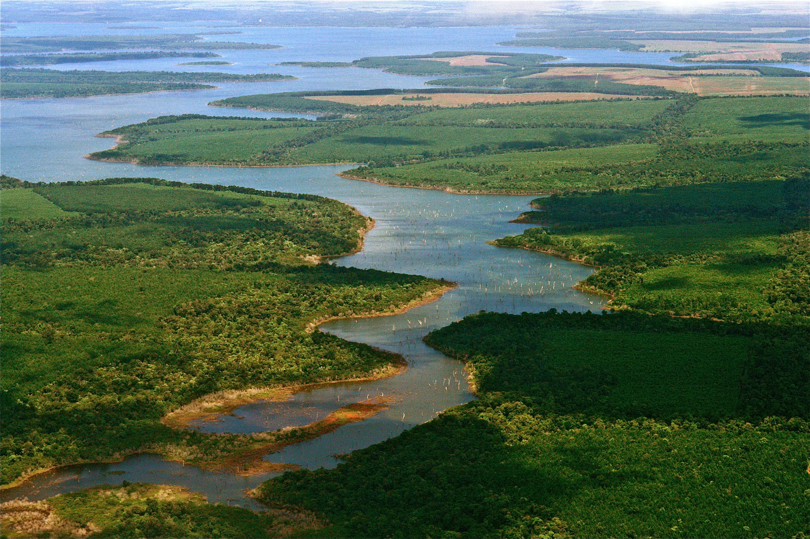
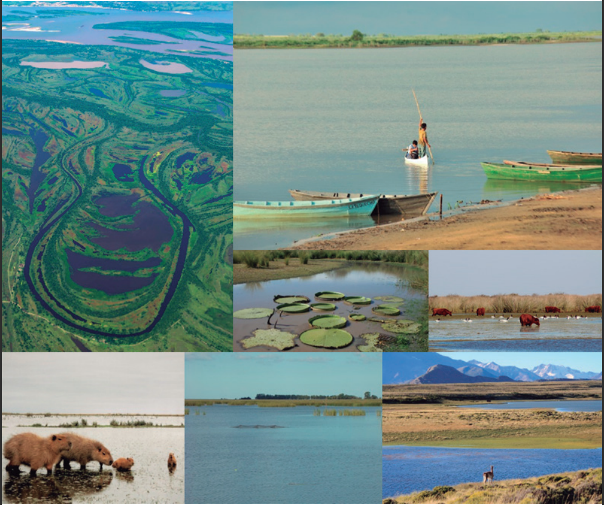
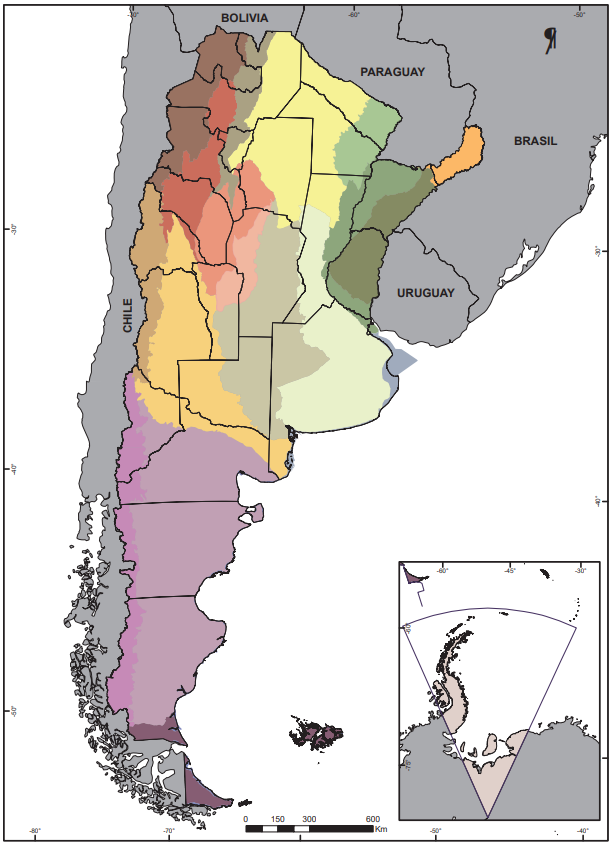
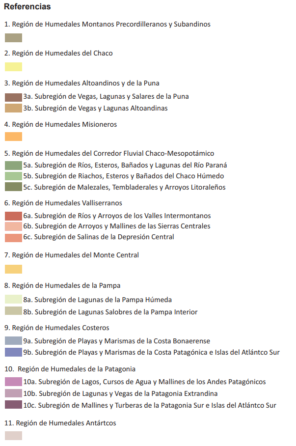
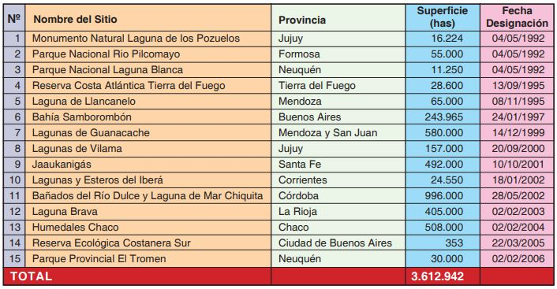
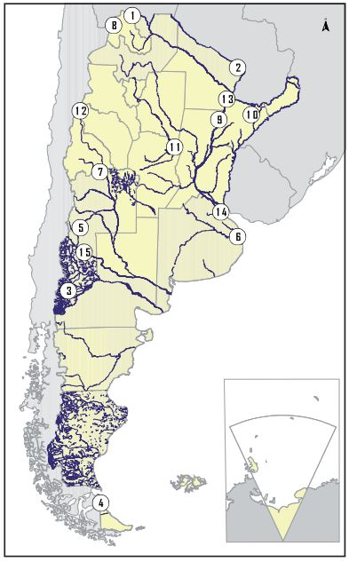

10 de Febrero: Dia Mundial de los Humedales

Esteros del Iberá. Provincia de Corrientes, Argentina
¿Que son los Humedales?
Un Humedal es en ambiente en el cual la presencia temporal o permanente de agua superficial o subsuperficial causa flujos biogeoquimicos propios o diferentes a los ambientes terrestres o acuaticos, los cuales pueden ser: la biota adaptada a estas condiciones, como plantas hidrofitas y/o suelos hidricos o sustratos con rasgos de hidromorfismo.
¿Porque son importantes?
Los humedales son enormes superficies de terrenos anegables que pueden formar partes de deltas, planicies interiores de un continente, de bosques, manglares, pantanos
o áreas litorales de las lagunas. Estos se pueden llenar con agua de lluvia, de un rio, de un arroyo, provenientes del mar.
Sus principales caracteristicas son:
- Son zonas de transicion entre ambiente acuatico y terrestre, teniendo caracteristicas intermedias entre los dos ecosistemas, aunque algunos con el paso del tiempo desarrollan caracteristicas propias con ricas propiedades ambientales para la flora y la fauna.
- Son bancos de Genes debido a que poseen una gran diversidad genetica de animales y plantas, dandoles gran potencial y reserva de especies de interes medicinal.
- Son reservorios de agua dulce, y pueden ser usados para producir alimentos como el arroz. Debido a que las aguas que los recargan, estan cargadas de sedimentos ricos en nutrientes, lo que las hacen propicias para la actividad agricola sin usar agroquimicos.
- Proveen sales necesarias para la formación del Plancton, indispensable para el desarrollo de la vida acuatica.
- Retienen grandes cantidades de agua y las libera lentamente, lo que puede evitar tanto sequias como inundaciones.
- Regula el regimen fluvial de un rio (crecida o bajada).
- Poseen gran variedad de aves acuaticas que son pajaros que migran hacia estas zonas, y utilizan sus recursos para alimentarse y construir sus nidos.
- Son paisajes unicos y espectaculares, por lo tanto, son sitios de interes turistico.

Servicios ecosistemicos de los Humedales
Humedales en Argentina
 
Mapa de Regiones de Humedales de Argentina. Fuente: Kandus, P., Minotti, P., Fabricante I., y Ramonell, C. Identificación y delimitación de regiones de humedales de Argentina. En Regiones de Humedales de Argentina. Benzaquen, L., Blanco, D., Bo, R., Kandus, P., Lingua, G., Minotti, P. y Quintana, R. (editores). Ministerio de Ambiente y Desarrollo Sustentable, Fundación Humedales/Wetlands International, Universidad Nacional de San Martín y Universidad de Buenos Aires, en prensa
Un Humedal es en ambiente en el cual la presencia temporal o permanente de agua superficial o subsuperficial causa flujos biogeoquimicos propios o diferentes a los ambientes terrestres o acuaticos, los cuales pueden ser: la biota adaptada a estas condiciones, como plantas hidrofitas y/o suelos hidricos o sustratos con rasgos de hidroformismo.
¿Que es la Convencion RAMSAR?
Los sitios RAMSAR aluden a los humedales de importancia internacional como habitad de aves acuaticas.
Es un tratado intergubernamental aprobado el 02 de Febrero de 1971 en la ciudad iraní de Ramsar, relativo a la conservación y el uso racional de los humedales. A pesar de que el nombre ofi cial de la Convención de Ramsar se refi ere a los Humedales de
Importancia Internacional, especialmente como Hábitat de Aves Acuáticas, con los años su enfoque se ha ampliado y actualmente se utiliza apropiadamente el nombre de Convención sobre los
Humedales. La Convención entró en vigor en 1975 y en la actualidad más de 150 países de todo el mundo han adherido a la misma
La Convención sobre los Humedales los define en forma amplia como: “las extensiones de marismas,
pantanos y turberas, o superficies cubiertas de agua, sean éstas de régimen natural o artificial, permanentes o temporales, estancadas o corrientes, dulces, salobres o saladas,
incluidas las extensiones de agua marina cuya profundidad en marea baja no exceda de
seis metros”. En esta definición quedan incluidos todos los ambientes acuáticos continentales y la zona costera marina.
Implementación de la Convención de Ramsar en la República Argentina:
La República Argentina aprueba la Convención sobre los Humedales en el año 1991 a través de la sanción de la Ley 23.919,
que entró en vigor en setiembre del año 1992 luego de depositado el instrumento de ratificación.
Las principales acciones a nivel nacional que implementa son:
- Designación de Humedales de Importancia Internacional
- Planifi cación y monitoreo del manejo de los Sitios Ramsar
- Articulación de acciones con otros organismos
- Evaluación y presentación de proyectos sobre conservación de humedales: El Fondo de Pequeñas Subvenciones
- Capacitación
- Inventario y diagnóstico de humedales
- Comunicación, educación y concienciación del público
Las principales acciones a nivel internacional que implementa son:
- Asistencia a reuniones
- Estrategia Regional de los Humedales Altoandinos
- Sistema de humedales de los ríos Paraguay y Paraná
Sitios RAMSAR en Argentina


Bibliografia
- Regiones de Humedales de Argentina (Benzaquen et al. 2006)
- Humedales de la Republica Argentina (Grupo de Trabajo de Recursos Acuaticos. 2008)
- Wais de Badgen I. 1998. "¿Que son los Humedales?". Un abrazo a la vida